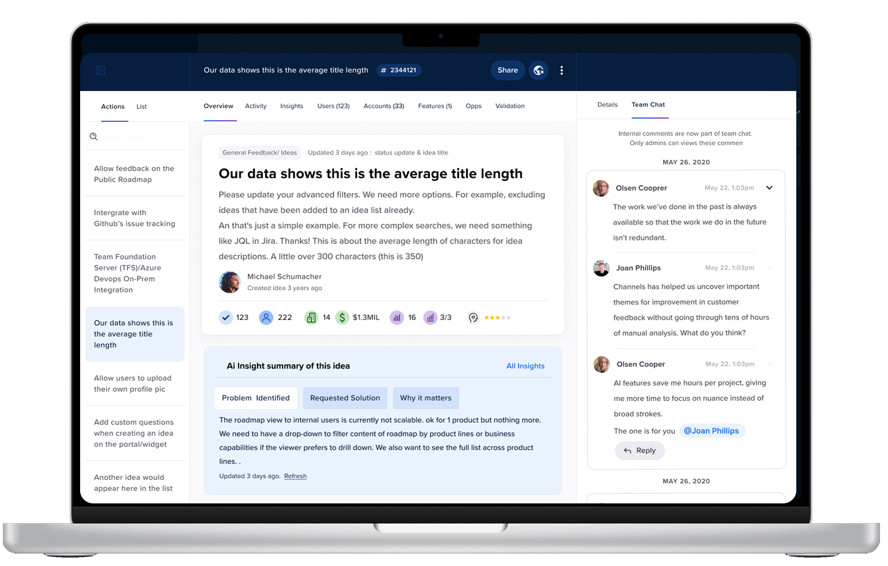
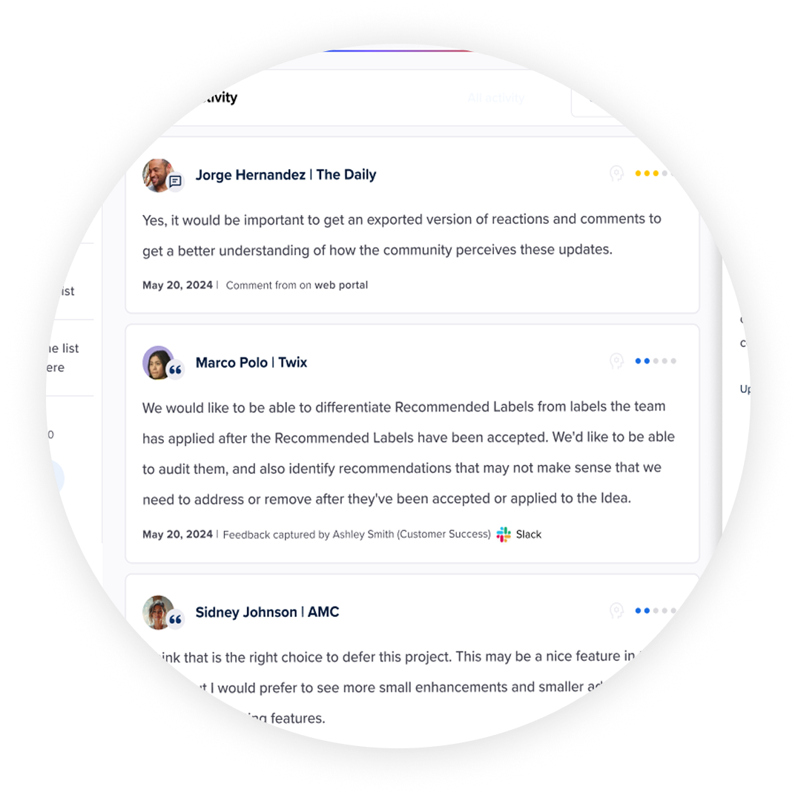
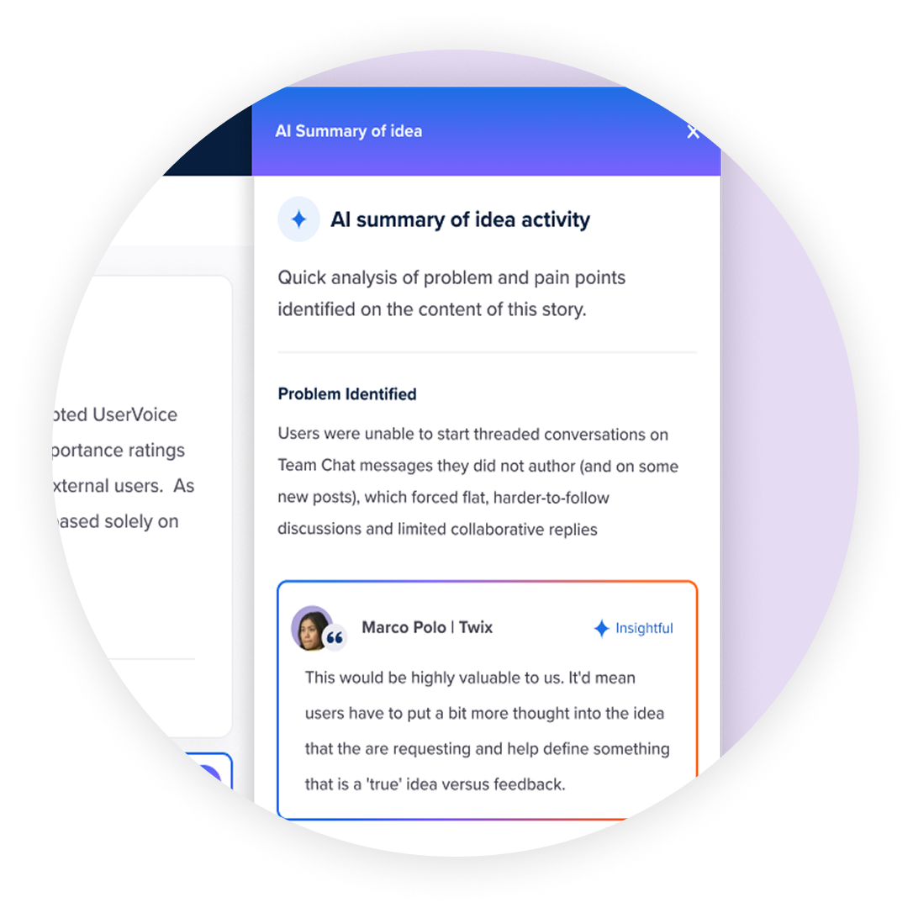

The Constraint
Solve the technical wall first.
Before any design work could happen, there was a technical wall. When the Idea Sheet was first built, the team forked Angular UI Router. That decision had compounded for years — it blocked Angular updates, blocked the React migration, and meant you couldn't meaningfully change the layout without first replacing the component underneath it.
So that's where we started. Product, engineering, and I aligned on replacing it with React Dock before touching the design. Not a win on its own — just what had to happen first. Same situation as the grid, same approach: unblock the technology, then do the work.
Original idea sheet · What I inherited when I joined UserVoice
Research & Validation
Eight interviews before opening Figma.
This wasn't designed in a vacuum. Before touching a layout, I ran moderated interviews with 8+ admins across Procore, Netflix, Zendesk, Greenhouse, Xero, SmartRecruiters, Mitel, and PandaDoc — power users, occasional visitors, large enterprises, smaller teams.
The interviews were structured around jobs to be done — not "what do you think of this design" but "walk me through the last time you opened an idea." That framing surfaced things a survey never would.
"I'd like to tuck away the metadata stuff, to focus on the activity entries."
I layered those findings against Heap analytics — heatmaps and path data showing what admins actually did, not what they said they did. Interviews told me why. Data told me how often.
The Options dropdown is a good example of why both mattered. It came up constantly in interviews as something admins relied on. Heap confirmed it — 12% of all post-view clicks went straight into that menu. But the interviews explained why that was a problem: nobody could predict what was inside it.
Before Part 1 shipped we ran prototype sessions with a subset of participants. The removed features weren't noticed or missed. Buried actions started getting used — merge match came up unprompted. After launch we iterated on feedback as real usage surfaced edge cases. Testing was part of the process, not a checkpoint at the end.
Analytics audit · Top-used actions mapped from Heap data
Existing IA — mapped before redesign · Heap data + moderated interviews
Details & Activity
Features
Users · 5%
Accounts · 2%
Idea Header
Title & descriptionHigh usage
Activity Feed (below fold on most screens)
Feedback recordsHigh usage
Comments & repliesHigh usage
Status historyRarely used
Options menu — 12% of all post-view clicks
Edit
Merge
View on web portal
Add voter
Delete
Set public status
Properties Sidebar
Public status6% of paths
Labels5% of paths
Internal status2% of paths
Assigned adminLow usage
Custom fields (10+)Varies
Voter count / reachImportant
Everything present, nothing prioritized — high and low-usage items at the same visual weight. 12% of clicks going into an unpredictable menu.
How I Approached It
Five principles that shaped every decision.
Separate reading from acting.
Two zones: left for content, right rail for actions. Once the split was clear, everything else fell into place.
Explode the Options menu.
12% of post-view clicks went into an unpredictable dropdown. Surfaced the most-used actions into the right rail. Menu kept for secondary actions only.
Reduce modal takeover.
Replaced full-screen modals with slide-in panels. Context stays. A stepping stone toward the slideout pattern that later spread across the product.
Subtract before you add.
Analytics showed which features weren't being used. We dropped them — not tucked away, dropped.
Design for the scroll.
Sticky nav anchored title and key state as admins scrolled long activity feeds. A small decision with a large effect.
Three Parts, Not One
Sequenced deliberately.
This wasn't a single redesign. It was three separate pitches, each scoped tightly, each building on the last.
Part 1
The shell and right rail
Replace the Angular sheet component with React Dock. Redesign everything except the activity feed — the right rail, quick actions, status, labels, tabs, the two-zone layout.
Part 2
The activity feed
Its own pitch, its own complexity. Internal and external activity made visually distinct. Iconography introduced to differentiate user types, accounts, revenue. Quick filter tabs added.
Part 3
The inner tabs
Users, Accounts, Features, Validation tabs updated to match the new design language. User Detail and Account Detail redesigned to match. One system, propagated across the product.
This sequencing mirrors what we did on the grid — target the highest-impact piece first, leave the complex Angular component for a separate cycle, build forward iteratively.
What Shipped
Six decisions that defined the surface.
Left: content & activityRight: status, actions & fields
Public & internal statusLabels · Custom fields · Integrations
Slide-in panel, not a modalEmail subscribers notified inline
Comments & Feedback · Internal · AllQuick filters · Improved scannability
Slideout over modalsContext preserved · Pattern that spread
User type · Account · Revenue sourceVisual language carried across the product
Connective Tissue
Extending the interaction philosophy.
The Idea Sheet didn't just inherit the grid's visual language — it extended the interaction philosophy.
The grid introduced the filter drawer as a slide-in pattern for exposing complexity without navigating away. The sheet introduced slide-in panels for actions — a stepping stone between full modal takeover and the full slideout that would later appear in bulk actions. Each project pushed the pattern one step further.
The color system, status pills, and iconography carried forward deliberately. An admin who'd learned to read the grid could read the sheet without relearning anything. That consistency wasn't visual tidiness — it was reduced cognitive load across the whole product.
What It Made Possible
A foundation for what came next.
The first redesign established the foundation. What came next was built on top of it.
With the sheet now in React, we could move faster. The component library was reusable. The design language was consistent. The two-zone structure created natural homes for new capabilities.
The second round was informed by heatmapping data and a shift in how admins were beginning to think about ideas. Not just individual ideas, but groupings. Themes. Patterns across the backlog. The work was scoped and slated — designs in progress when the project paused.
That shift pointed toward AI: an overview landing page with AI-generated problem/solution/why it matters summaries. An activity feed that could summarize recent changes rather than requiring admins to scroll through every entry. Internal chat with @ mentions replacing internal comments. Idea Owner as a native field. AI label recommendations.
The sheet wasn't just a management tool anymore. It was becoming an intelligence layer — a place where the product could help admins understand what a piece of feedback meant, not just store it.



What I'd Tell You
Four things that carried forward.
The IA decision is the design decision. Reorganizing elements within a broken structure doesn't fix the structure. The two-zone split — read left, act right — sounds obvious in retrospect. It took eight interviews and click analytics to see it clearly enough to commit to it.
Sequence the work like you sequence the design. Three separate pitches, each scoped tightly, each building on the last. The activity feed wasn't in scope for Part 1 because it was too complex. Trying to do everything at once would have meant shipping nothing. Bounded work ships.
Subtraction is a design skill. Every feature we removed was something engineering had built and someone had once believed in. Dropping them based on analytics rather than sentiment is harder than adding new ones. But unused features add noise even when they're not being used.
One step at a time builds the pattern. The slide-in panels weren't the end state — they were a deliberate step toward it. Two years later the slideout pattern was everywhere in the product. The direction was clear from the first cycle; each iteration moved closer.